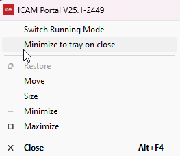
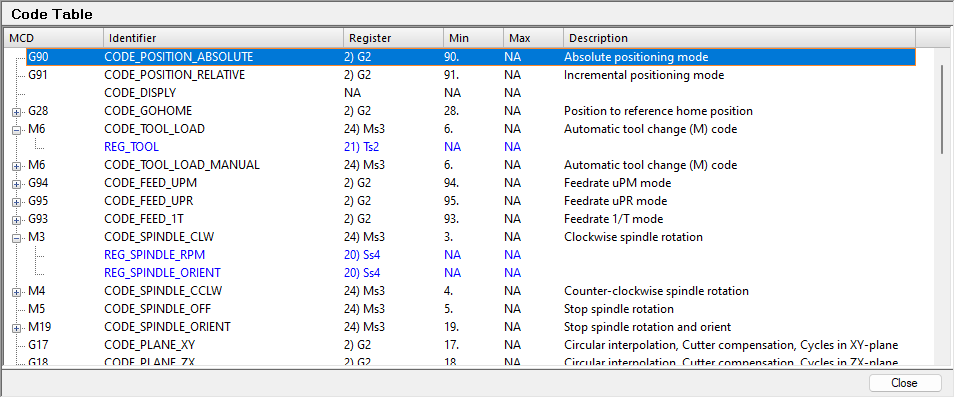
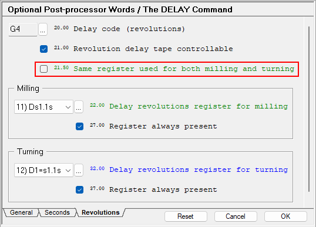
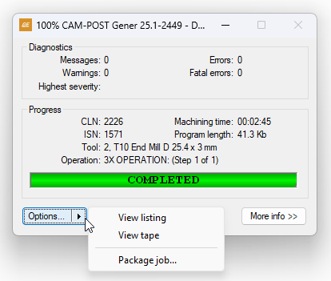
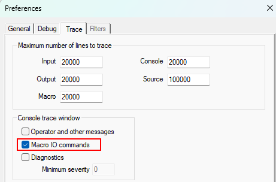
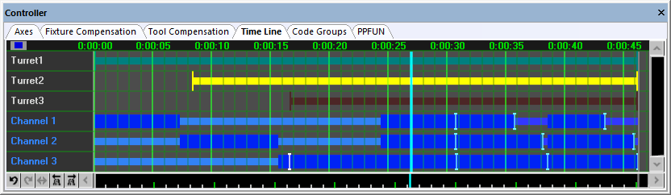
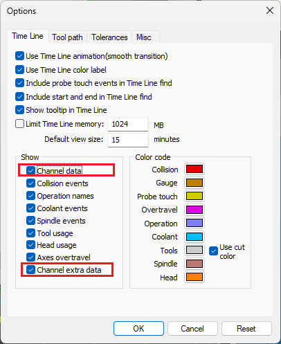
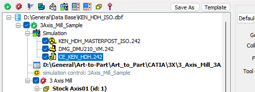

ICAM V25.1 Release
These release notes describe the most significant V25.1 enhancements and problem corrections.
We hope you enjoy your new release of the Vericut Icam products and we sincerely welcome your feedback.
The CGTech Icam R&D Team January 24, 2025
Systems and Packaging
Product Availability
System Manufacturer |
O/S Minimum Requirement |
Microsoft Windows 64-bit |
10, 11, 2016, 2019, 2022 |
Important
V25.1 includes changes in the database format for PP, CE, and VM objects. A V25.1 database cannot be used with a V25.0 run-time. If you have a QUEST developer license, please ensure that you upgrade all your client installations (developer and run-time).
Vericut Icam software is not available for UNIX systems. An Icam database created with V20 or earlier on a UNIX system is fully compatible with Vericut Icam software running on Windows systems.
V25.x does not support 32-bit architectures. The 32-bit installers are available with V24.x on demand only. Contact support@icam.com should you require a 32-bit installation. Note that using 32-bit is a disadvantage, having less available memory for a running process.
Productivity Tools
Portal
The portal application now have an option to specify if the application should close when the X is pressed or if it should be minimized to Windows tray bar.

Quest Developer’s
Table code summary section available for CE development.
The code table section will show all the CODE identifiers available for CE processing. Codes that also use registers can be expanded to view the list of associated REG identifiers.

When highlighting a CODE or REG identifier in the list, the help bottom window will show the question help and description.
Using the context menu (right-click) or double-clicking on the selection will open the question section and select the associated question.
Mill-turn separate delay codes for mill and turn.
New question has been added asking if same register can be used in both milling and turning mode. This is giving opportunity to defined easily different revolution delay registers if required.

When generating a VM model in QUEST, the automated snapshot of the VM model has been improved with automatically using a white background and hiding the grids and axis markers.
Gener Post-processing
Command & variable to control priority RTA and WIND. $WINDPRT and LINTOL/WIND[,(HIGH|AUTO|LOW)], (ON|OFF) available for controlling the priority.
External user DLL/Python can now return CODE and DATA in GENER macro. From the external DLL or python script, return a string with the CODE_xxx or REG_xxx as seen in the questionnaire question help or the CERUN manual.
Gener & Cerun
When the processing job is run with the interface in progress, The "View..." button can be used at completion time to view the tape file (GENER only), listing or package the job.

New support for Python script for external user macro functions.
The existing external function declaration mechanism now allow to select a python 3.x script which will hold the functions to be called from the macro processor.
The DECLAR syntax is the same as the C++ API but referencing the python script as source.
DECLAR/EXTERN,'C:\scripts\functions.py',FUNCTION,REAL,GETTOOLPARAM(REAL,STRING)
The python script would then define the function. Here is a list of requirement:
A provided samples/ExternalFunctions/python/sample/ICAMTools.py script must be imported or embedded in your python file.
Each function must have an added last argument which will be the diagnostic callback so the python script can directly send messages, warnings or errors to the run-time console window.
from ICAMTools import * def GETTOOLPARAM(toolno, param_name, diagnosticsCallback): diagnosticsCallback(f'Issue this message to the console', ICAMDiagnosticsLevel.MESSAGE.value) param = GetToolParamFromFile(toolno, param_name) ICAM_real = ICAM_Real(param) return ICAM_real.get_value()
The user external C++ DLL API version is now 4.0. The software is still backward compatible with any existing DLL made with earlier version of the API.
New in this version 4.0 is an automatic call that passes PP/CE/VM info when first called. These are the information passed for each PP/CE/VM used in the job:
Name
Descriptor
Version
Dedicated (0 or 1)
Type (0:PP, 1:VM, 2:CE)
The external C++ DLL will receive a specific call before any user-defined function are called. The following function will provide the DLL with PP/CE/Model name, descriptor and version.
extern "C" DLLEXPORT int CALL_INTERFACE ICAMExtDBInfo(const S_ICAMObjList& objectList);
Improved Macro IO Commands verbose information when turned ON in Tools-->Preference. This should be turned ON to get more information when opening a file using the macro OPEN/nn command and get system information related to permission.

Virtual Machine
The Virtual Machine Controller window Time Line tab can now display channel data. The information provided includes channel creation, deletion, activation, deactivation, starvation, synchronization points, idle and wait time. The data is displayed with color coding and useful tooltip description making it easy to analyze channel interdependency and overall machine use.

Channel data display in Time Line is controlled by the 'Simulation->Options' dialog under the 'Time Line' tab 'Show' section. The 'Channel data' check box show the main machine channels that are usually directly controlled by the post-processor or the control emulator. The 'Channel extra data' check box show channel data that are created by the user for other purpose such as tool changer mechanism or UHF devices.

Macro Functions and System Variables
Module |
Variables |
|---|---|
GENER |
$AW, $BW,$CW $LAW, $LBW,$LCW |
GENER |
$LINTOLR,$LINTOLF |
GENER |
$WINDPRT |
GENER |
$CPPFIL,$CPPPFL |
$AW, $BW,$CW Rotation relative to current active frame
Type: Numeric, Read, Write
These variables contain tool orientation expressed in the current RTCP output format, otherwise regular rotary axes. The values can express either direction vector, the upper point of the "two-points" programming output, coefficients of the virtual axis (RPY, Euler or custom virtual axis) or contain standard active rotary axes.
$LAW, $LBW,$LCW Last rotation relative to current active frame
Type: Numeric, Read, Write
These variables contain tool orientation of the previous motion expressed in the current RTCP output format, or contain standard active rotary axes.
$CPPFIL Current component full database name
Type: String, Read-only
This variable contains the database full post-processor name of the current component (in the form "name.vvv;nn").
$CPPPFL Previous component full database name
Type: String, Read-only
This variable contains the database full post-processor name of the previous component (in the form "name.vvv;nn").
$LINTOLF Status of LINTOL processing for feed motions.
Type: Numeric, Read, Write
The $LINTOLF variable shows the value of the LINTOL interpolation tolerance for feed motions.
The value zero (0.0) indicates that the LINTOL interpolation for feed motions has been turned off.
$LINTOLR Status of LINTOL processing for RAPID motions.
Type: Numeric, Read, Write
The $LINTOLR variable shows the value of the LINTOL interpolation tolerance for RAPID positioning motions.
The value zero (0.0) indicates that the LINTOL interpolation for RAPID motions has been turned off.
$WINDPRT Priority of WIND rotation over RTA.
Type: Numeric, Read, Write
When RTA sequence is being generated and both RTA (180degrees) motion and WIND (360degrees) motion is possible Gener will, by default, generate shorter rotation (RTA). However, there may be cases when generating WIND rotation (360*n degree) may be required or advantageous. The $WINDPRT variable allows to indicate if preferred rotation method is WIND or RTA.
Default value of -1 indicates that WIND has low priority and RTA will be applied if only possible. The value of 1 indicates the WIND has higher priority and it will be applied instead of RTA, if possible.
The value zero (0.0) indicates that the WIND-RTA priority is established automatically,
Integration Tools
New CAM integration support with Cimatron 2025. Icam users with Cimatron can call Gener to postprocess directly from the Cimatron environment. To do so, the user must run the setup utility, select the database, and the post to install it. The setup utility for Cimatron supports multi-databases and posts.
After the post is installed in the setup utility, the user in Cimatron can find the post name in the post-process section. All the Icam posts follow the naming syntax of Icam_(Post name).
The user can select two options: either to run Gener after outputting the CL file or to output the CL records only, as well as the user can also choose to display the launcher or run the genre directly.
Setup utility now provide a way to select the perMachine settings even when perUser is available The setup utility can integrate both the Local and Current user registry. Sometimes, users want settings that are different from those of the local machine so that the setup utility can do so now. Suppose the integration is done for both the Current and Local machines. In that case, the current user prioritizes all the time except when the check box for prioritizing all users' settings is selected, in which case the setting will be read from the local machine registry.
Extractor UI: Improve control over selection of posts, models and CEs in the Database Within the extractor UI, the user can run Gener, CERUN, or PSE. The input for each module can be different depending on the user. By adding the checkbox, the user can now select, depending on the application, the post in the database from the posts list in the database or CE and choose the options for that module only.

The BLOCK, DEFCOPY and COPY commands, which are unique to 3DEXPERIENCE, are now supported. These provide cldata functionality, similar to the INDEX and COPY aptsource commands, to replicate sections of the aptsource file. Note that currently, there is no facility to support these commands using CNC subprograms in GENER.
{kind=link}
{kind=link}
Supported CAM Systems
The following is the list of supported CAM systems V25.1.
CAM system |
Supported Versions |
|---|---|
3Dexperience |
Latest |
Catia |
V5R21-34 |
FeatureCAM |
2017-24 |
Fusion 360 |
Latest |
Gibbscam |
2024-25 |
Cimatron |
2025 |
Mastercam |
2019-25 |
Creo |
4-11 |
Powemill |
2021-24 |
NX |
12, 1847, 1872, 1899, 1926, 1953, 1980, 2007, 2206-2406 |
PQRs
The following is a partial list of corrections made to V25.1.
PQR |
Description |
|---|---|
06700 |
Aptsource input was no longer recognizing "." as a zero. [V25.0-2449] |
06694 |
Fixed PPFUN/12,NEXT,n,2 would not force the rotary out in certain conditions. [V24.2-2448] |
06694 |
Fixed the GENER PPFUN controller tab window which would not show the proper status for PPFUN/12,NEXT. [V24.2-2448] |
06692 |
Fixed CREO extractor where in-process stock positioning was wrong. [V24.2-2447] |
06672 |
The following drill cycle code questions were fixed so an alternate text can be answered instead of a G code. [V25.0-2440] #42.00 TAP-RIGID cycle code #120.00 TAP-DEEP cycle code #130.00 TAP-BRKCHP cycle code |
06670 |
The TOOLNO/TOOL,1 command was generating an error while the syntax is valid and documented that way. [V25.0-2440] |
06208 |
Provide an option allowing to output DPM F velocity for rotary-only motions, while RTCP is active. [V25.0-2440] |
06666 |
LCS output: First motion after the establishment of a LCS can be wrong if LCS output is set to move rotary axes. This is occuring when LCS/AUTO command is active.[V25.0-2440] |
06640 |
$TLTAB(18,n) set to $NULL instead of appropriate 1:MAIN 2:SIDE values when HEAD commands are used without HEAD/BOTH command. [V25.0-2435] |
06642 |
Fixed an issue where the launch panel would not add the default extension on output file names. [V25.0-2435] |
06636 |
Fix handling of special continuation line in CL file comment used by some CAM system [V25.0-2435] |
06628 |
Fixed an issue with basic-posts in QUEST producing errors in QUEST when language is Chinese and Japanese. [V25.0-2431] |
06620 |
Fixed issue with macro editor colourization not recognizing the system variables. [V25.0-2428] |